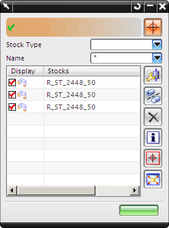

编辑型材
一旦您把型材放置到管线段中，您就可以通过在管线部件库中选择不同的型材来更改它。在此您可以选择不同的 NPS 或者材料规格，如果您的部件中只有一段型材，那么您可以使用型材对话框来进行更改；如果部件中存在多段型材，那么您可以使用型材浏览器来单独查看与编辑管线装配中的任意型材。


编辑型材 — 更改型材类型，或者更改指派型材的管线段。
型材样式 — 更改型材在一条或者多条管线段上的显示样式，您可以选择：
-
中心线
-
简单实体
-
详细实体
移除型材 — 从一条或者多条管线段中移除当前指派的型材。

信息 — 显示与选定型材有关的各种信息。
全选 — 选择出现在型材浏览器中的全部型材。
根据选择调整视图 — 在视图中最大化显示选定型材。
要重命名型材，在型材列中选择某个型材，然后单击型材名称，此时您就可以输入新名称，完成后回车确认。
要编辑指派给多个管线布置对象的型材类型，打开型材对话框，然后选择管线布置对象，最后点击指定型材以访问指定项对话框。
位于何处？
|
应用模块 |
机械管线布置 |
|
工具条 |
机械管线布置→编辑型材下拉菜单→编辑型材 |
|
菜单 |
编辑→管线布置型材→型材 |
|
快捷菜单 |
右击现有管线型材→编辑型材 |
|
部件导航器 |
右击扫掠特征→编辑型材 |